Getting started
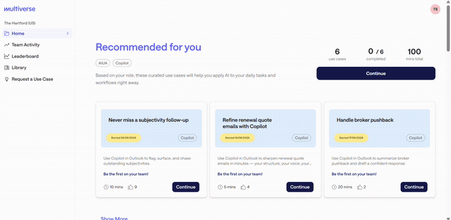
Head to members.multiverse.io each week to find one AI shortcut for your job — the goal is to try 1–2 use cases a week until you've worked through them all. At the top of the homepage you'll find personalized recommendations, picked based on your role and refreshed weekly, so it's worth checking back often.
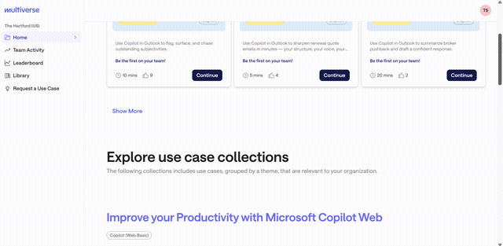
Below your recommendations, use cases are grouped into collections you can browse by topic. This is the fastest way to find something relevant to what you're working on right now.
Opening a use case
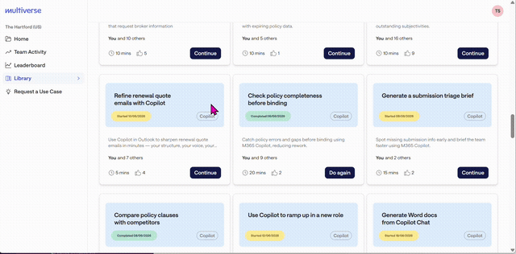
A use case is a step-by-step tutorial on applying AI to a specific task — things like drafting a referral justification or summarizing a report. Every one has actually been tried and found valuable by a colleague. Click into any use case card to open it.
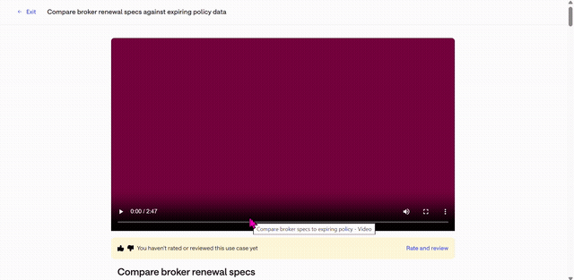
Most use cases start with a short video, 1–3 minutes, showing a real example of the use case in action.
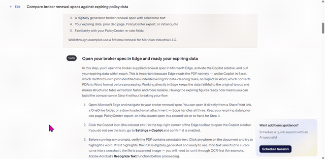
Below the video is a detailed walkthrough — step-by-step instructions, example prompts, and screenshots — so you can apply it to your own work right away.
If you get stuck, or just want to talk through how to apply it, you can book a 1:1 session with an AI specialist right from the use case page.
Finishing a use case
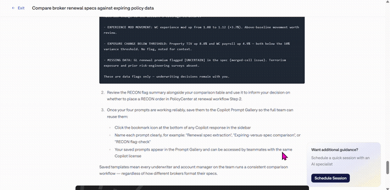
Once you've tried a use case, tell us how it went. Thumbs down gives you a chance to leave feedback on what didn't work. Thumbs up prompts you to share an Impact Story.
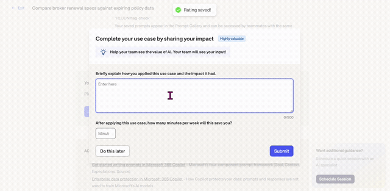
An impact story is short: what you did, what impact it had, and roughly how many minutes a week you expect it to save you. It's the main way your team finds out a use case is actually worth their time — so it's worth the extra minute to fill in.
Team activity & leaderboard
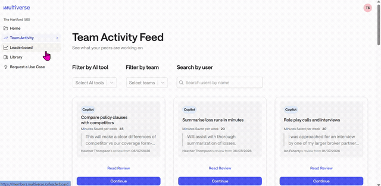
Once you've submitted an impact story, it shows up on the Team Activity page — a feed of what everyone across the company is trying and finding valuable. You can filter by tool, team, or a specific person, and see the time people are saving.
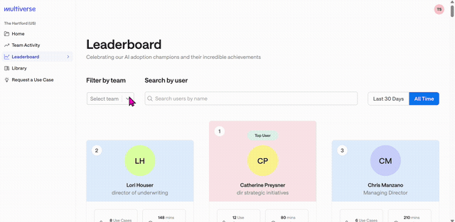
The leaderboard shows who's submitted the most impact stories. If someone on your team is doing a lot with AI, click into their profile to see everything they've tried — and pick one for yourself.
Library & requesting a use case
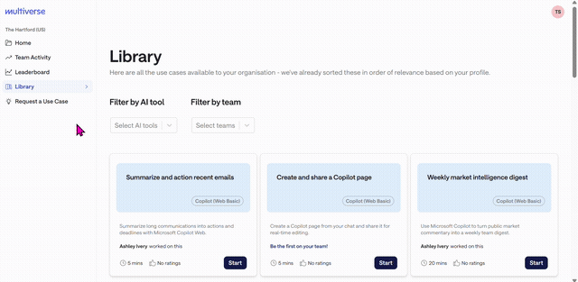
If you want to see everything on the platform in one place, that's the Library — every use case, filterable by team and tool.
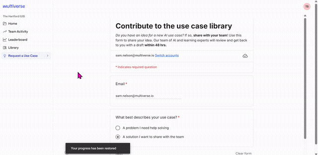
If you have a problem you'd like AI to help with — or a solution you've already figured out that others should know about — click Request a Use Case. Fill in a few details, and an AI specialist will follow up to get it added to the platform.
Keep coming back
AI impact compounds — the more use cases you try, the more time you get back each week, and the more habits you build that stick. New use cases get added over time too, so there's always something fresh to try. Aim to check the platform a few times a week, not just once, and pick up a new use case each visit before your next check-in.
Ready to try one?
Open the Adoption Platform and pick a use case from your recommendations.
Back to the top ↑